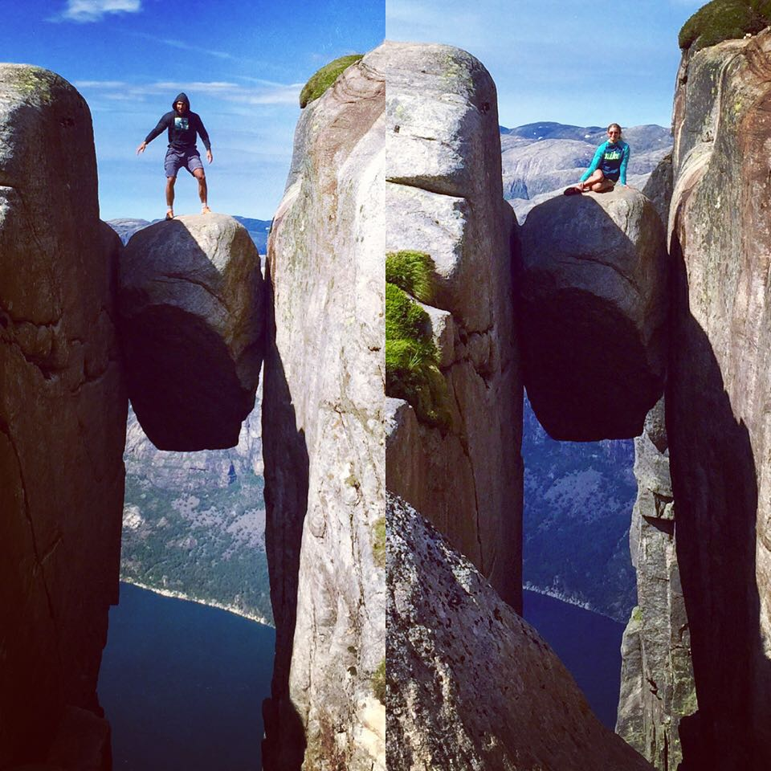
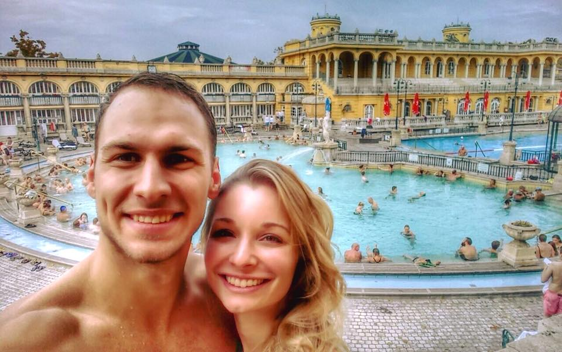
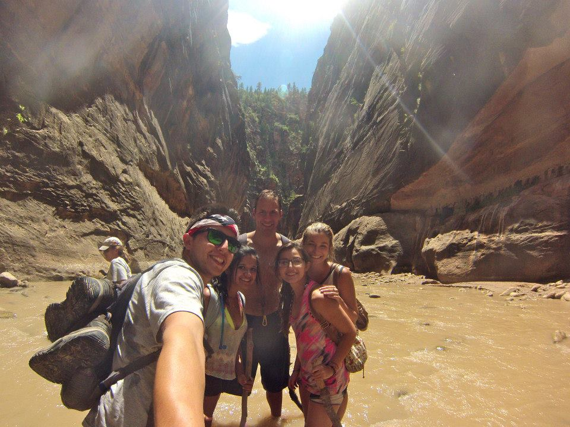

NORWAY
 |
4 friends, 3 days, 2 hikes, 1 epic adventure. We flew to Norway with the goal of tackling two of the most famous hikes: Preikestolen (Pulpit Rock) and Kjeragbolten. Preikestolen took about 3-4 hours roundtrip, and was one of the most enjoyable hikes and breathtaking views we've ever seen. As you journey to the Pulpit Rock, there is a lake nestled in the middle of the mountain, which adds an even greater sense of wonder to the experience. Kjeragbolten took about 5-6 hours roundtrip, and was much more challenging of a hike. To climb the mountain, there is a metal chain staked into the rock for people to pull themselves up. It steeply ascends and then just as steeply descends multiple times before eventually reaching a flat expansion the last hour before emerging to the notorious rock suspsended between two cliffs. |
BUDAPEST
 |
There are a couple things to know about Budapest: the first is that there is Buda, and there is Pest. Yes, they are two separate places (or sides of the city to be more precise). In essence, you could think of it as one city with two very distinct personalities. The next notable thing about this unique city is the ruin bars. Picture being surrounded by surreal art, crumbling brick, and rickety furniture, and immersed in underground vibes. Truly a nightlife experience unlike any other. Lastly, do not miss the famous Bath Houses. This is guaranteed to be a trip highlight - both relaxing and exciting. |
ZION
 |
Granted, the 8 straight hours of driving it took us to arrive to Bryce National Park made for 2 really sore butts and 1 equally sore attitude (Amanda gets cranky when she's cranky, tired, and/or driving for 8 consecutive hours). But this journey led us to some of the most majestic views and memories yet, including the nearby Zion National Park. We hiked The Narrows, a place you can feel an epic sense of adventure from the very beginning when you spot a huge variety of walking staffs lined up against the rock wall. Each person grabs his/her staff of choice and sets straight off into the canyon via a river. Now at this point you may be thinking what we were thinking... why is it necessary to grab a Gandalf staff? Because the more you hike into the canyon, the more you use it for stability since you can't see what's underneath your feet as you plunge through the river. Throughout the duration of the hike, the river ranges from ankle-deep to neck-deep, and if you arne't careful, you could very well get your foot sucked into mud, enable to break free. Side note: this is another great reason to grab a staff... to be pulled to safety by a friend. As we hiked further and further into the canyon, the canyon walls became more and more narrow (yes, you guessed it: that's why it's called The Narrows. Clever, I know). We hiked until thunder roared above us, at which point we knew it was time to flee. Afterall, getting swept away in a flashflood would not be ideal, especially for Amanda whose swimming skills abruptly end after the dog-paddle. We emerged from the canyon with seconds to spare, and the sky exploded with rain as we laughed our way back to the car victorious and joyful. |